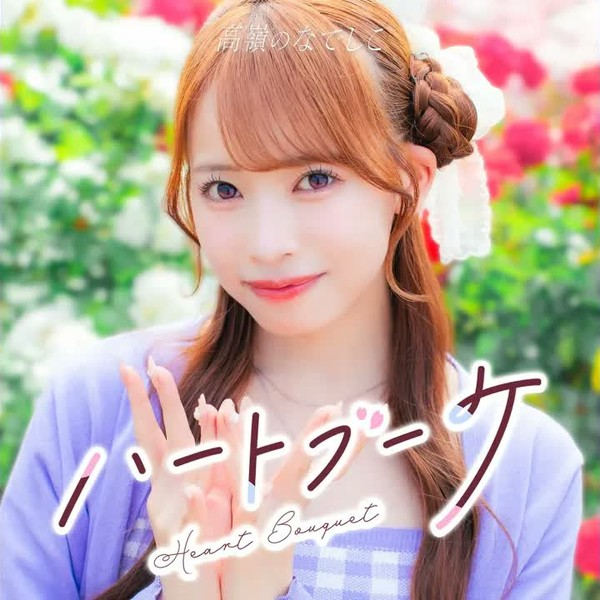

Sorter for Takane no Nadeshiko songs. Pick your releases, and hit the Start button.
Certain options have details that you can hover to read.
Click on the song you like better from the two, or tie them if you like them equally or don't know them.
Depending on how many releases you pick, you'll get up to 189 picks, so set aside a cup of tea for this.
Keyboard controls during sorting: H (pick left) J (undo) K (tie) L (pick right) S (save progress).
Before sorting: Enter (start sorting) C (load progress).
After sorting: 1/2/3 correspond to the first/second/third buttons (K/J/S also work).
Fan-made sorter. All song titles and cover images belong to their respective owners. Based on charasort by Frelia (@execfera).
October 2nd, 2026 - Song sorter created.